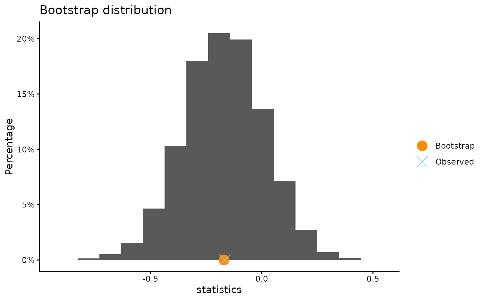
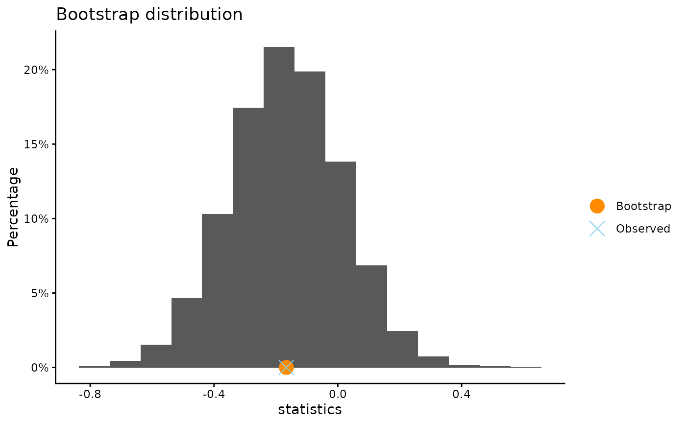

Bootstrap paired data
Source:R/bootPaired.R, R/bootPaired.default.R, R/bootPaired.formula.R
bootPaired.RdPerform a bootstrap of two paired variables.
Usage
bootPaired(x, ...)
# Default S3 method
bootPaired(
x,
y,
conf.level = 0.95,
B = 10000,
plot.hist = TRUE,
xlab = NULL,
ylab = NULL,
title = NULL,
plot.qq = FALSE,
x.name = deparse(substitute(x)),
y.name = deparse(substitute(y)),
seed = NULL,
...
)
# S3 method for class 'formula'
bootPaired(formula, data, subset, ...)Arguments
- x
a numeric vector.
- ...
further arguments to be passed to or from methods.
- y
a numeric vector.
- conf.level
confidence level for the bootstrap percentile interval.
- B
number of resamples (positive integer greater than 2).
- plot.hist
logical. If
TRUE, plot the histogram of the bootstrap distribution.- xlab
an optional character string for the x-axis label
- ylab
an optional character string for the y-axis label
- title
an optional character string giving the plot title
- plot.qq
logical. If
TRUE, a normal quantile-quantile plot of the replicates will be created.- x.name
Label for variable x
- y.name
Label for variable y
- seed
optional argument to
set.seed- formula
a formula
y ~ xwherex, yare both numeric vectors- data
a data frame that contains the variables given in the formula.
- subset
an optional expression indicating what observations to use.
Details
The command will compute the difference of x and y and
bootstrap the difference. The mean and standard error of the bootstrap
distribution will be printed as well as a bootstrap percentile interval.
Observations with missing values are removed.
Methods (by class)
bootPaired(default): Perform a bootstrap of two paired variables.bootPaired(formula): Perform a bootstrap of two paired variables.
References
Tim Hesterberg's website https://www.timhesterberg.net/bootstrap-and-resampling
Examples
#Bootstrap the mean difference of fat content in vanilla and chocolate ice
#cream. Data are paired becaues ice cream from the same manufacturer will
#have similar content.
Icecream
#> Brand VanillaCalories VanillaFat VanillaSugar ChocCalories ChocFat
#> 1 Baskin Robbins 260 16.0 26.0 260 14.0
#> 2 Ben & Jerry's 240 16.0 19.0 260 16.0
#> 3 Blue Bunny 140 7.0 12.0 130 7.0
#> 4 Breyers 140 7.0 13.0 140 8.0
#> 5 Brigham's 190 12.0 17.0 200 12.0
#> 6 Bulla 234 13.5 21.8 266 15.0
#> 7 Carvel 240 14.0 21.0 250 13.0
#> 8 Cass-Clay 130 7.0 11.0 150 7.0
#> 9 Chapman's 120 6.0 11.0 120 5.0
#> 10 Cold Stone 270 15.5 23.0 264 16.2
#> 11 Culver's 222 13.0 19.0 205 10.0
#> 12 Dairy Queen 140 4.5 19.0 150 5.0
#> 13 Dove 240 15.0 20.0 290 17.0
#> 14 Dreamery 260 15.0 24.0 280 12.0
#> 15 Edy's Grand 140 8.0 13.0 150 8.0
#> 16 Emack & Bolio's 160 9.0 12.0 170 9.0
#> 17 Good Humor 120 6.0 12.0 120 6.0
#> 18 Graeter's 260 16.0 24.0 260 16.0
#> 19 Green and Black 194 11.6 18.0 227 12.8
#> 20 Green's 150 8.0 17.0 140 8.0
#> 21 Haagen Dazs 270 18.0 21.0 270 18.0
#> 22 Hershey's 140 9.0 14.0 140 8.0
#> 23 Hill Station 226 15.6 16.8 235 14.3
#> 24 Kemp's 130 7.0 13.0 140 6.0
#> 25 Klein's 130 8.0 15.0 140 8.0
#> 26 Oberweis Dairy 307 21.0 23.0 320 21.0
#> 27 Our Family 130 7.0 11.0 130 6.0
#> 28 Perry's 140 8.0 15.0 140 7.0
#> 29 Ronnybrook Farm 240 16.0 20.0 260 19.0
#> 30 Ruggles 150 8.0 12.0 150 8.0
#> 31 Sara Lee 242 15.5 21.5 234 14.4
#> 32 Schwan's 140 7.0 12.0 140 7.0
#> 33 Sheer Bliss 300 19.0 27.0 320 19.0
#> 34 Smith's 150 8.0 13.0 150 8.0
#> 35 Stonyfield Farm 240 16.0 20.0 250 17.0
#> 36 Tillamook 160 9.0 10.0 170 9.0
#> 37 Turkey Hill 140 8.0 16.0 150 8.0
#> 38 Value Choice 130 6.0 12.0 130 6.0
#> 39 Whitey's 250 14.0 23.0 250 13.0
#> ChocSugar
#> 1 31.0
#> 2 22.0
#> 3 14.0
#> 4 16.0
#> 5 18.0
#> 6 22.6
#> 7 25.0
#> 8 16.0
#> 9 12.0
#> 10 23.6
#> 11 20.0
#> 12 17.0
#> 13 27.0
#> 14 33.0
#> 15 15.0
#> 16 13.0
#> 17 14.0
#> 18 24.0
#> 19 22.7
#> 20 15.0
#> 21 21.0
#> 22 13.0
#> 23 21.2
#> 24 17.0
#> 25 14.0
#> 26 19.0
#> 27 15.0
#> 28 15.0
#> 29 21.0
#> 30 16.0
#> 31 20.9
#> 32 12.0
#> 33 29.0
#> 34 13.0
#> 35 20.0
#> 36 13.0
#> 37 19.0
#> 38 15.0
#> 39 25.0
bootPaired(ChocFat ~ VanillaFat, data = Icecream)
#>
#> **Bootstrap interval for mean of paired difference
#>
#> Observed mean of ChocFat - VanillaFat : -0.16667
#> Mean of bootstrap distribution: -0.16953
#> Standard error of bootstrap distribution: 0.18029
#>
#> Bootstrap percentile interval
#> 2.5% 97.5%
#> -0.5256410 0.1820513
#>
#> *--------------*

bootPaired(Icecream$VanillaFat, Icecream$ChocFat)
#>
#> **Bootstrap interval for mean of paired difference
#>
#> Observed mean of Icecream$ChocFat - Icecream$VanillaFat : -0.16667
#> Mean of bootstrap distribution: -0.16632
#> Standard error of bootstrap distribution: 0.18164
#>
#> Bootstrap percentile interval
#> 2.5% 97.5%
#> -0.5230769 0.1897436
#>
#> *--------------*
